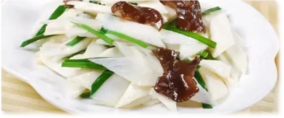

山药含有蛋白质、糖类、维生素、脂肪等成分，还含有碘、钙、铁、磷等孩子不可缺少的无机盐和微量元素，是秋季最佳的滋补食品。尤其对转骨期的孩子，父母可以用新鲜的山药及富含胶原蛋白的食物如猪脚、牛蹄筋、骨头等，与山药一同煲汤，为孩子补充营养。开脾健胃，既能打开孩子的胃口、增强食欲，还能补充营养，助孩子长高。
山药含有蛋白质、糖类、维生素、脂肪等成分，还含有碘、钙、铁、磷等孩子不可缺少的无机盐和微量元素，是秋季最佳的滋补食品。尤其对转骨期的孩子，父母可以用新鲜的山药及富含胶原蛋白的食物如猪脚、牛蹄筋、骨头等，与山药一同煲汤，为孩子补充营养。开脾健胃，既能打开孩子的胃口、增强食欲，还能补充营养，助孩子长高。
山药含有蛋白质、糖类、维生素、脂肪等成分，还含有碘、钙、铁、磷等孩子不可缺少的无机盐和微量元素，是秋季最佳的滋补食品。尤其对转骨期的孩子，父母可以用新鲜的山药及富含胶原蛋白的食物如猪脚、牛蹄筋、骨头等，与山药一同煲汤，为孩子补充营养。开脾健胃，既能打开孩子的胃口、增强食欲，还能补充营养，助孩子长高。
山药含有蛋白质、糖类、维生素、脂肪等成分，还含有碘、钙、铁、磷等孩子不可缺少的无机盐和微量元素，是秋季最佳的滋补食品。尤其对转骨期的孩子，父母可以用新鲜的山药及富含胶原蛋白的食物如猪脚、牛蹄筋、骨头等，与山药一同煲汤，为孩子补充营养。开脾健胃，既能打开孩子的胃口、增强食欲，还能补充营养，助孩子长高。

© 11467.com 长沙市妙笔丹青教育咨询有限公司版权所有 网址：http://27197295.b2b.11467.com/
公司地址：长沙 长沙市芙蓉区马王堆中路79号东方新城（东玺门）L1、L3栋418房 已经有人访问
联系电话：84613166 电话：13975116399 Email：janlizy@163.com 邮编：410000